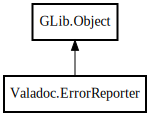

ErrorReporter
Object Hierarchy:

Description:
public class ErrorReporter :
Object
Content:
Constants:
Properties:
Delegates:
Creation methods:
Methods:
- public void error (string file, long line, long startpos, long endpos, string errline, string msg_format, ...)
- private bool is_atty (int fd)
- private inline void msg (string type, string type_color_start, string type_color_end, string file, long line, long startpos, long endpos, string errline, string msg_format, va_list args)
- private void print_highlighted_message (string message)
- public bool set_colors (string str)
Set all colors by string
- public void simple_error (string? location, string msg_format, ...)
- public void simple_note (string? location, string msg_format, ...)
- public void simple_warning (string? location, string msg_format, ...)
- public void warning (string file, long line, long startpos, long endpos, string errline, string msg_format, ...)
Fields:
Inherited Members:
All known members inherited from class GLib.Object